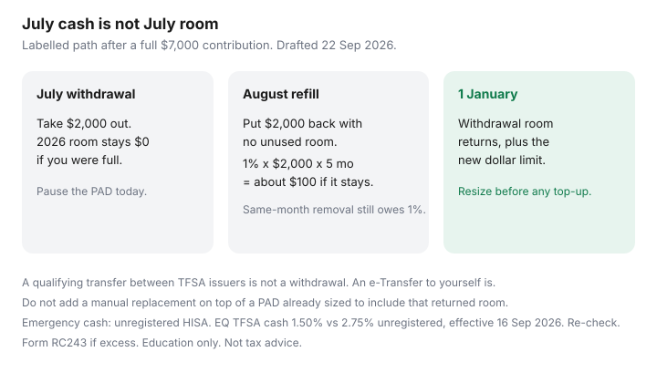

Personal Finance · Canada
TFSA Withdrawals in Canada: How to Pull Cash Without Destroying Next Year’s Room Plan
A TFSA withdrawal is allowed. Putting the money back in the same calendar year is the part that surprises people, usually in the form of a 1% monthly tax on an excess they thought was a simple replacement. The room for that withdrawal returns on 1 January of the next year, along with the new dollar limit. It does not return on Friday.
This page is the timing plan: when a withdrawal is the right tool, how a same-year recontribution becomes excess, and how to restart contributions in January without overshooting. Not investment advice and not tax advice. CRA pages used 22 Sep 2026. The ledger that should drive this is how to read TFSA room.
Disclosure: HISA accounts and brokerage TFSA accounts are offer types. Saving Optimizer may later add partner links. We do not currently claim an issuer partnership. This is education, not tax or investment advice. A qualifying transfer between TFSA issuers is different from a withdrawal. Confirm the form with the institution.
Key takeaways
- A withdrawal does not create room until 1 January of the next year. Growth inside the TFSA does not use room. Withdrawing the growth still waits until next year to come back as room.
- Putting the same dollars back this year uses room you must already have had. If you were at the limit, the replacement is excess, taxed at 1% per month on the highest excess in the month.
- A direct qualifying transfer between TFSA issuers is not a withdrawal. Withdrawing to chequing and depositing elsewhere is.
- Pause the payday PAD the day you withdraw. Turn it back on in January only after you resize it for the new room, including the withdrawal that just came back.
- Money you might need this year usually belongs in an unregistered HISA, not in the TFSA you will have to crack open.
Withdrawal basics: room returns January 1 next year—not same year
CRA’s withdrawing guidance is plain: the amount you take out is added to room on 1 January of the following year. It is not added the week the cash hits chequing. The 2026 dollar limit is $7,000. On 1 January 2027 you also receive whatever the 2027 dollar limit is — confirm it on CRA’s table when it is published — plus unused 2026 room plus 2026 withdrawals.
A labelled path, which matches the shape of CRA’s own examples: room on 1 January 2026 is $7,000. You contribute $7,000 in January. Room left is $0. You withdraw $2,000 in July for a car repair. Room left is still $0 until 1 January 2027. On that date the $2,000 comes back, plus the new year’s dollar limit, if nothing else changed.
Interest or investment growth inside the account does not consume room and does not increase this year’s room when you leave it invested. If you withdraw the growth, the withdrawn dollars follow the same January rule. You do not get a special “earnings room” in July.

Same-year re-contribution traps and penalties
The trap is treating the TFSA like a HISA you can empty and refill. If you put the $2,000 back in August and you had no unused room, that $2,000 is excess from August onward.
| What you do | 2026 room effect | Tax sketch |
|---|---|---|
| Withdraw $2,000 in July and leave it out | No new 2026 room. $2,000 returns 1 Jan 2027. | None from this withdrawal. |
| Put $2,000 back in August and leave it until year-end | $2,000 excess for August through December. | 1% × $2,000 × 5 months = $100. |
| Put it back in August and remove the excess in August | Excess existed during August. | At least August’s 1% ($20). Later months stop once the excess is gone. |
| Qualifying transfer to another TFSA issuer | Not a withdrawal and not a new contribution. | None, if the institution actually transfers it. |
The tax uses the highest excess in the month. Removing the money on the 30th does not erase a deposit on the 2nd. File Form RC243 for the excess. Do not wait for My Account to catch up. Issuers report withdrawals by the end of February following the year, so the portal can still look calm while the 1% is already running. Full lag notes are on the room page.
If you still had unused room besides the $7,000 you contributed, you can recontribute up to that unused amount. The withdrawal itself did not create it. Read the ledger before you move the cash back.
Plan withdrawals around emergencies vs lifestyle spending
Split the reason before you click withdraw.
- True emergency (job gap, a repair that keeps someone working, a medical bill): take the cash if the unregistered HISA cannot cover it. Then stop. Do not “pay yourself back” inside the TFSA until next January unless the ledger shows unused room.
- Planned spending (a trip, a renovation, a car you have been circling): if you know you will need the money this year, it should not have been the only home of that money. A sinking fund outside the TFSA is the budget job. Withdrawing invested TFSA dollars for a want also sells at whatever the market is doing that week. This page does not tell you what to hold. It tells you the room will not refresh until January.
- Moving institutions: use the receiving issuer’s TFSA transfer form. An e-Transfer to yourself is a withdrawal.
Households with kids hit this when a camp bill or a dental bill lands in the same month as a car repair. The order of cash is still the emergency HISA first, the TFSA second. The debt plan’s one-month buffer exists so the TFSA is not the furnace account: household payoff plan.
Keep contribution automation paused until room returns
A payday PAD does not know you withdrew. If the account was full, every deposit after the withdrawal is excess until 1 January. The day you withdraw:
- Pause the recurring TFSA transfer. Same day. Pending transfers that have not settled still count if they settle.
- Log the date, the issuer, and the amount out. Do not add it back into this year’s running room.
- Leave a note on the January calendar: “TFSA room returns — resize before any top-up.”
- If a second adult has their own TFSA, do not “borrow” their room. Their PAD is their room.
The sizing method for a PAD that is allowed to run is in automate TFSA contributions: remaining room divided by pays left, and a pause after any emergency withdrawal. Restarting early because the chequing balance looks high is the same mistake as the recontribution.
Track dates so January top-ups don't overshoot
On 1 January the withdrawal comes back. That is the dangerous morning, because two good habits collide. People replace the withdrawal by hand and leave a PAD that was already sized to include that returned room.
Labelled overshoot: 2027 opening room is the new dollar limit plus the $2,000 you withdrew in 2026, and you had no other unused room. Call that sum R. You transfer $2,000 back on 2 January “to replace it,” and the PAD is set to contribute all of R over the year. You have scheduled R + $2,000 against room of R. The extra $2,000 is excess again. The replacement is the contribution. It is not a bonus on top of a full-year PAD.
January steps, in order:
- Write R from the ledger: new dollar limit + unused room + last year’s withdrawals. Do not copy My Account if it has not caught up. April is when prior-year slips are the useful check.
- Decide one path: a lump sum, or a PAD, or a lump sum that is part of R with the PAD equal to what remains.
- Turn the PAD on only after that arithmetic is on paper. The first pay of January is early enough to be wrong.
When to use a HISA outside the TFSA instead
Use an unregistered HISA for the emergency buffer and for any sinking fund you expect to spend this year. Three reasons, all practical:
- You can withdraw and replace HISA cash in the same month with no TFSA excess tax. The HISA is a parking spot. The promo-cliff checklist is when the rate drops.
- TFSA cash rates are often lower than everyday unregistered rates. EQ’s TFSA cash savings rate was 1.50% on 16 Sep 2026, against 2.75% on the Personal Account with a qualifying direct deposit. Re-check both. Interest outside the TFSA is taxable (T5 at $50 or more; report smaller amounts). At a high combined marginal rate the tax can narrow that gap. Do your own after-tax comparison. The room trap does not go away because the after-tax rates are close.
- CDIC coverage on an eligible deposit HISA is the same $100,000 per category per member idea as other deposits. Insurance is not a reason to stuff the emergency fund into a TFSA at the same member. The category rules are in the parking guide.
Keep the TFSA for money that can stay through a bad week and through this calendar year. If you already withdrew for an emergency, the repair is the pause and the January resize, not a same-week refill.
Sources & date stamps
- CRA, TFSA contributions and withdrawals — room from a withdrawal is added on 1 January of the next year; do not recontribute in the same year unless you still have unused room (used 22 Sep 2026).
- CRA, Excess TFSA amount — 1% per month on the highest excess in the month; Form RC243.
- CRA, dollar limit — $7,000 for 2026. Confirm the next year’s dollar limit on CRA’s table when it is posted. This page does not invent a 2027 limit.
- EQ Bank rates effective 16 Sep 2026 — TFSA cash 1.50%; unregistered Personal Account 2.75% with qualifying direct deposit. Re-check. The $2,000 tax sketch is an illustration.
Frequently asked questions
When does TFSA withdrawal room come back?
On 1 January of the next calendar year, not in the month you withdraw. A July 2026 withdrawal becomes room on 1 January 2027, together with that year’s dollar limit and any unused room. The 2026 dollar limit is $7,000. Confirm the next year’s limit on CRA’s table.
Can I put the money back in the same year?
Only if you still have unused contribution room after counting contributions already made. The withdrawal does not create that room. If you were at the limit, the replacement is excess.
How much is the over-contribution tax?
1% of the highest excess amount in the month, for each month the excess exists. A labelled $2,000 put back in August and left until year-end is about $100 (five months). Removing it the same month still leaves that month’s 1%. File Form RC243.
Should I stop my automatic TFSA transfer?
Yes, the day you withdraw, if the PAD would now exceed remaining room. Leave it off until January, then resize it so a manual replacement and the PAD are not both trying to use the returned room.
Is moving a TFSA to another bank a withdrawal?
A qualifying direct transfer between issuers is not a withdrawal and does not use room. Withdrawing to chequing and depositing at the new institution is a withdrawal plus a new contribution. Use the issuer’s transfer form.